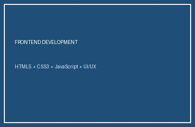

Швидка навігація: Детальний опис можливостей | Галерея зображень | Корисні посилання
HTML скорочення від "HyperText Mark-up Language" - перекладається як "Мова розмітка гіпертексту" https://w3schoolsua.github.io/.
Гіпертекст - це текст, що не послідовно зв'язаний з іншими документами, дозволяючи з першої сторінки документу перейти на останню
HTML впроваджує засоби для: створення структурованого документу шляхом позначення структурного складу тексту: заголовки, абзаци, списки, таблиці, цитати та інше; отримання інформації із Всесвітньої мережі через гіперпосилання; створення інтерактивних форм; включення
зображень,
звуку,
відео,
та
інших
об’єктів
до
тексту.
1. Загальна архітектура Fullstack (фото в кореневій папці, ширина 100%):

2. Frontend розробка (фото в папці images/, ширина 50%):

3. Backend & Бази даних (клікабельне фото-посилання 20% ширини):
(натисніть на картинку вище, щоб перейти на офіційну документацію MDN)